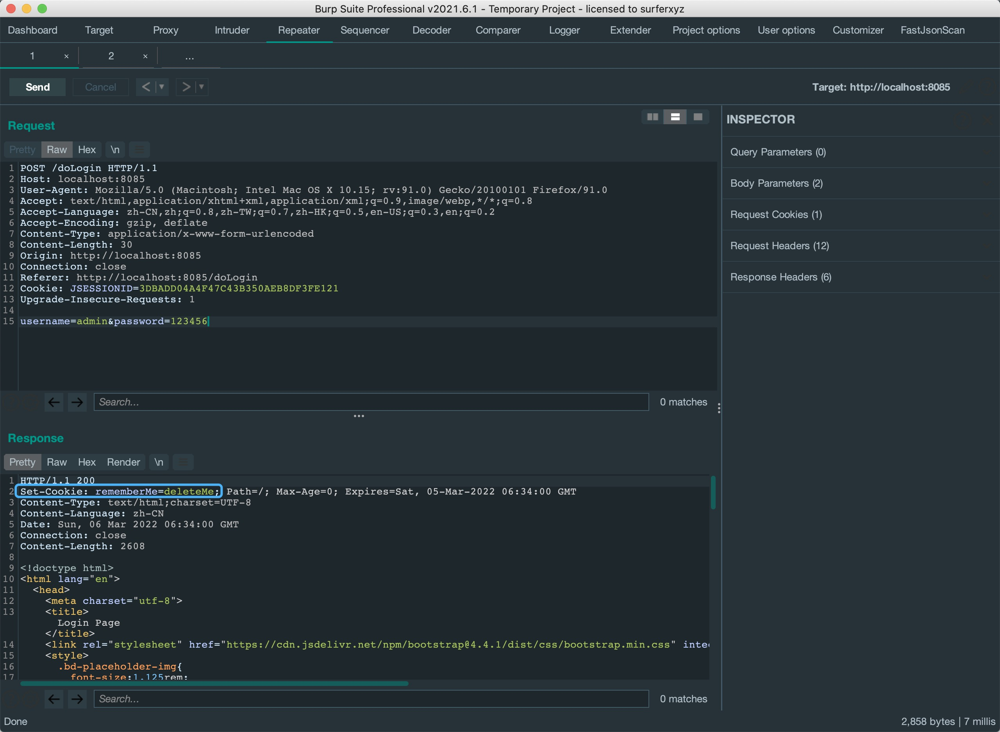
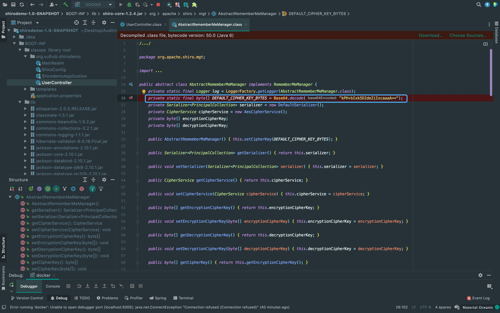
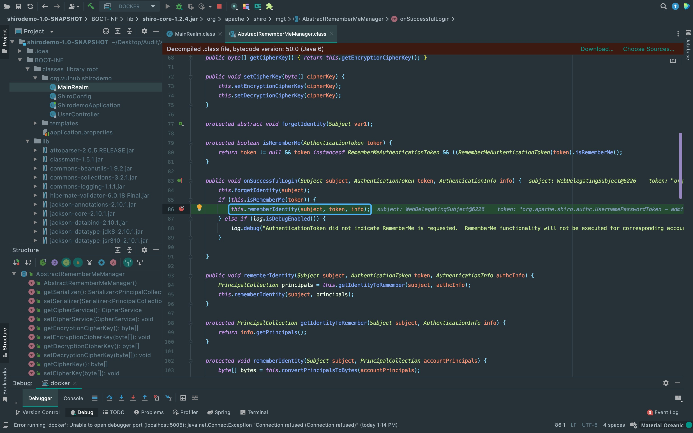
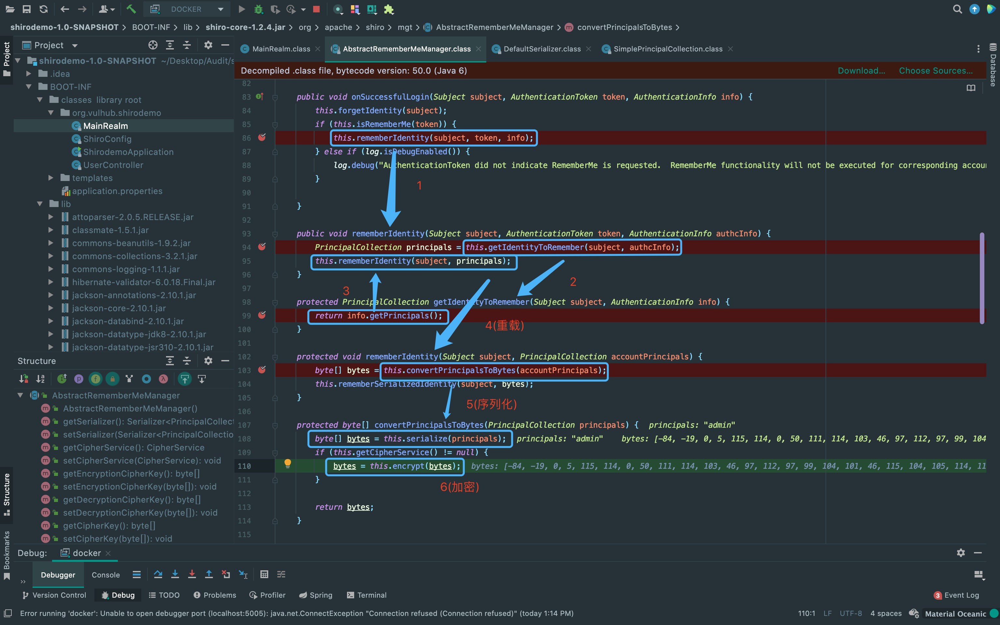
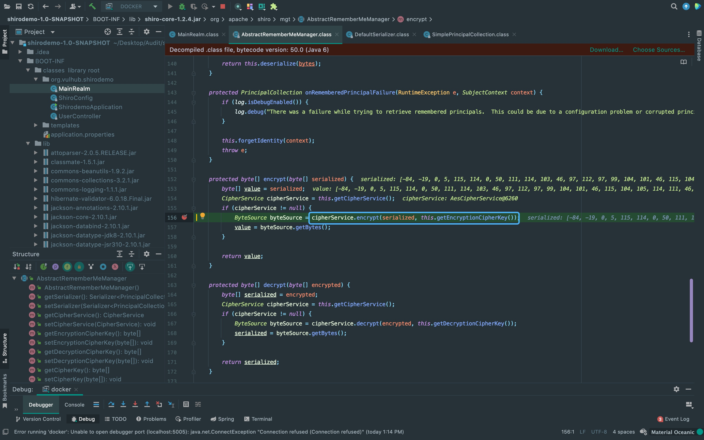
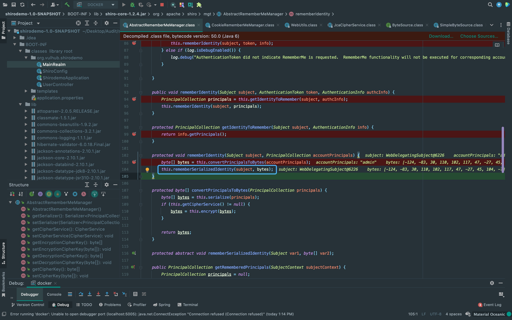
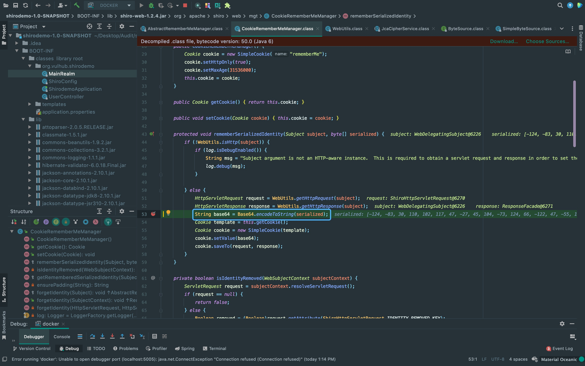
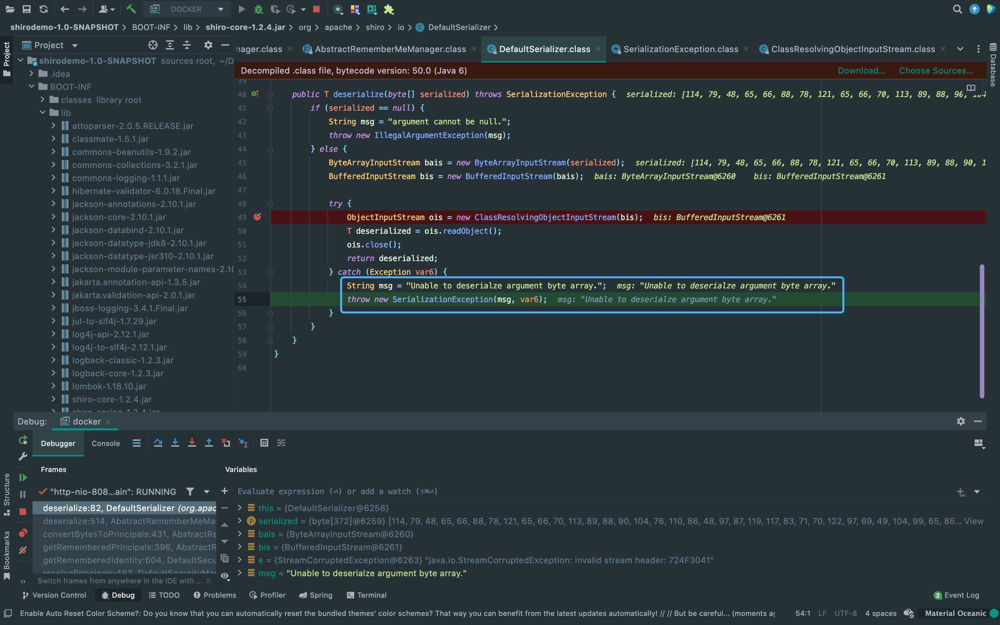

前言
关于shiro的反序列化漏洞，之前只是看了几篇分析文章，实战中打打EXP就结束了，这次来审计漏洞的根本原因。
影响范围
Apache Shiro < 1.2.4
配置环境
不得不说，shiro这个版本太旧了，配置环境花了一个中午，最终选择使用vulhub的docker远程调试。
version: '2'
services:
web:
image: vulhub/shiro:1.2.4
ports:
- "8085:8080"
- "5005:5005"
command: java -agentlib:jdwp=transport=dt_socket,server=y,suspend=n,address=5005 -jar /shirodemo-1.0-SNAPSHOT.jarShiro特征
提交表单登陆可以看到Set-Cookie: rememberMe=deleteMe;的字段。
{kind=link}
漏洞成因
在shiro 1.2.4版本之前，RememberMe cookie中加密的序列化数据是通过AES密钥(硬编码如图)加密的。 这导致了我们在RememberMe功能中，可以通过修改cookie为我们恶意的序列化数据来打反序列化链。这个cookie的作用主要是用来保存用户的会话状态，具体的序列化数据加解密过程在后面分析。
大概的一个过程是shiro获取cookie中的rememberMe的值，将其base64解码后使用AES密钥解密，再进行反序列化。 换句话说，shiro生成的RememberMe cookie是先将序列化数据base64编码，再通过AES密钥加密。
{kind=link}
Cookie加密
首先勾选rememberMe，使用账号密码登陆。可以看到来到onSuccessfulLogin方法中，判断勾选了rememberMe后进入rememberIdentity方法。
{kind=link}
这里从箭头指向可以看到rememberIdentity方法重载的过程。之后进入convertPrincipalsToBytes方法， 先是serialize方法序列化登陆信息，之后进入encrypt方法进行加密。 这个convertPrincipalsToBytes方法是重点，基本上是构造shiro的remember cookie的过程。
{kind=link}
这里可以看到使用了getEncryptionCipherKey方法获取密钥来加密，而这个密钥默认是从AbstractRememberMeManager方法中调用setCipherKey获取到的。
{kind=link}
接着，返回加密后的byte数据，跟随变量流向进入rememberSerializedIdentity方法，
{kind=link}
rememberSerializedIdentity方法中又对该数据进行base64编码后返回Set-Cookie。
{kind=link}
构造payload
这里有个比较坑的地方，构造payload打过去发现报错了
{kind=link}
EXP问题
1. aes的key不一定是kPH+bIxk5D2deZiIxcaaaA==，可能被修改。这里可以在github上找出现频率较高的key来爆破。
2. 该漏洞RCE无回显，可以通过依赖构造回显。
There Is Nothing Below
 Turn at the next intersection.
Turn at the next intersection.